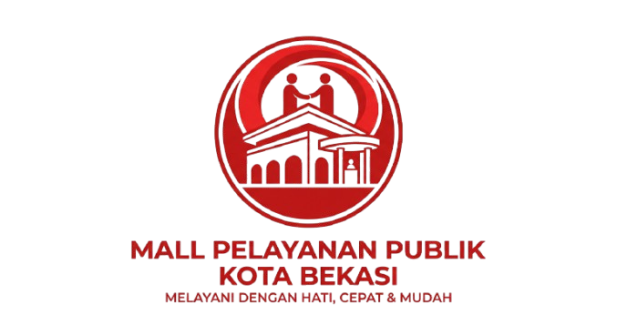
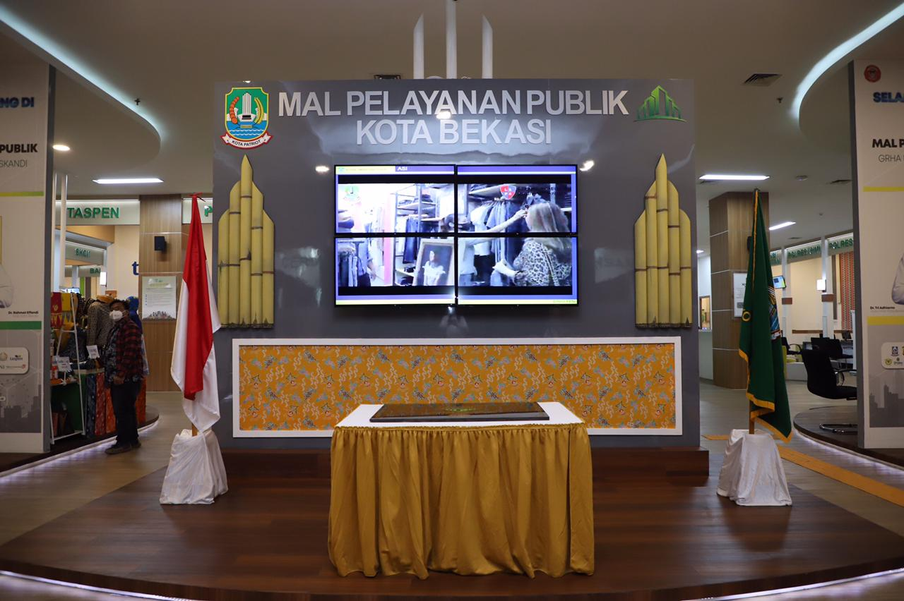
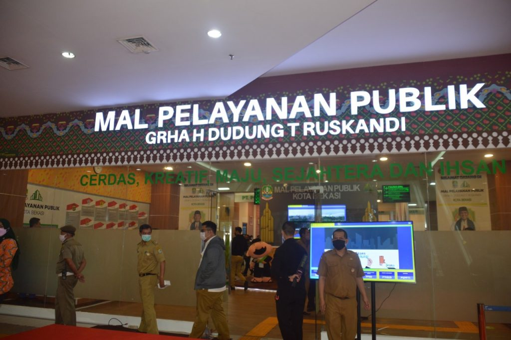
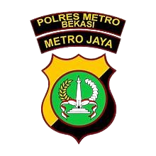
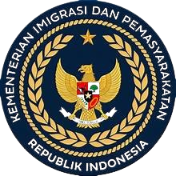
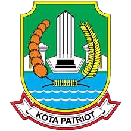
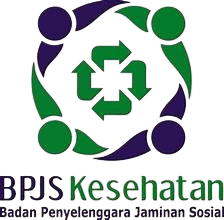

Kota Bekasi
Berkomitmen untuk menghadirkan pelayanan publik yang prima dan responsif, MPP Kota Bekasi menyatukan berbagai instansi demi efisiensi waktu Anda. Mulai dari urusan kependudukan hingga perizinan usaha, semua siap kami layani dengan sepenuh hati.
Ikuti berita terbaru tentang perkembangan MPP Kota Bekasi dan layanan publik yang kami tawarkan.

MPP Kota Bekasi meraih penghargaan sebagai Mall Pelayanan Publik terbaik di Indonesia, mengukuhkan komitmen kami dalam memberikan layanan prima kepada masyarakat.
Baca Selengkapnya
MPP Kota Bekasi meraih penghargaan sebagai Mall Pelayanan Publik terbaik di Indonesia, mengukuhkan komitmen kami dalam memberikan layanan prima kepada masyarakat.
Baca Selengkapnya



Frequently Asked Questions
Anda dapat mengakses layanan di MPP Kota Bekasi melalui website resmi atau dengan datang langsung ke lokasi.
Sebagian layanan di MPP Kota Bekasi bersifat gratis, namun ada beberapa layanan yang mungkin memerlukan biaya tertentu.
Anda sudah bisa melakukan perpanjangan SIM mulai dari 90 hari (3 bulan) sebelum masa berlaku SIM tersebut habis.
Tidak bisa. Jika SIM sudah lewat masa berlaku walau hanya 1 hari, Anda tidak bisa memperpanjangnya di MPP dan harus membuat SIM baru di Satpas Polres Metro Bekasi Kota.
Gerai Samsat di MPP Kota Bekasi khusus melayani pajak kendaraan tahunan untuk wilayah Jawa Barat. Untuk kendaraan luar provinsi, belum bisa dilayani di sini.
Guna menghindari antrean panjang dan kehabisan kuota harian, warga sangat disarankan melakukan booking jadwal terlebih dahulu melalui menu "Antrean Online" di website ini..
ika terlambat lebih dari 60 menit dari nomor antrean yang berjalan, nomor antrean Anda akan hangus secara otomatis, dan Anda harus melakukan booking ulang untuk hari lain.
Anda wajib membawa KTP asli & fotokopi, SIM asli yang masih berlaku, serta Surat Keterangan Sehat dan Surat Lulus Tes Psikologi (keduanya bisa diurus langsung di area MPP).